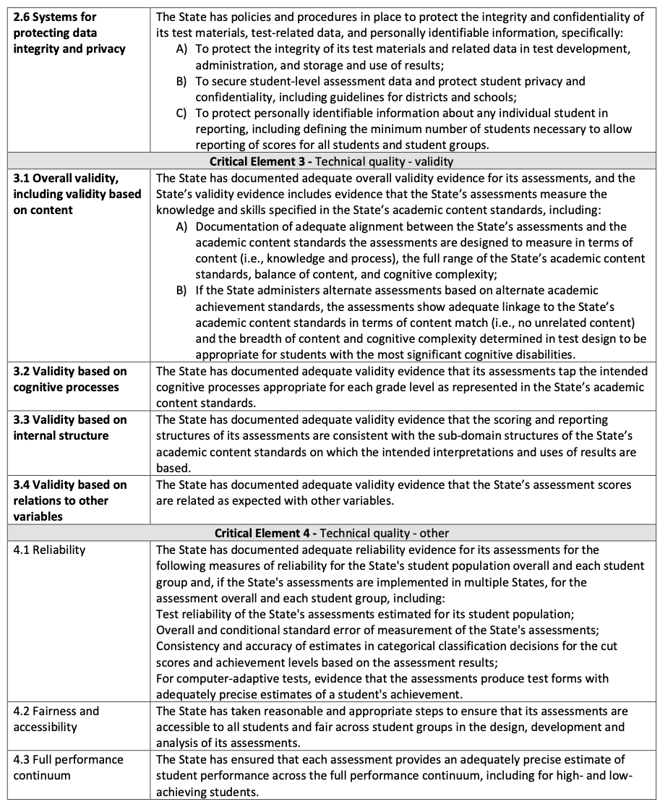
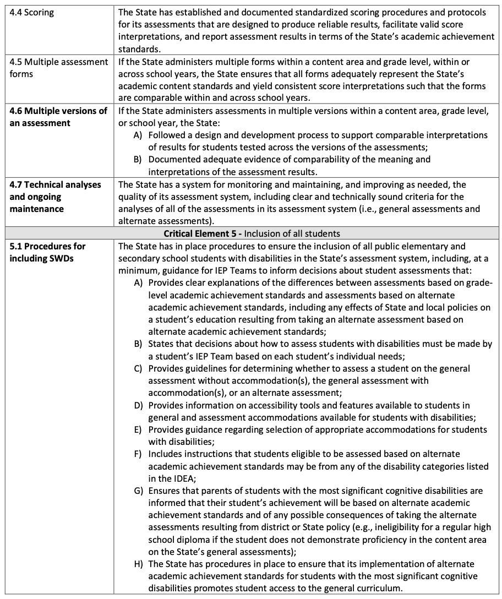
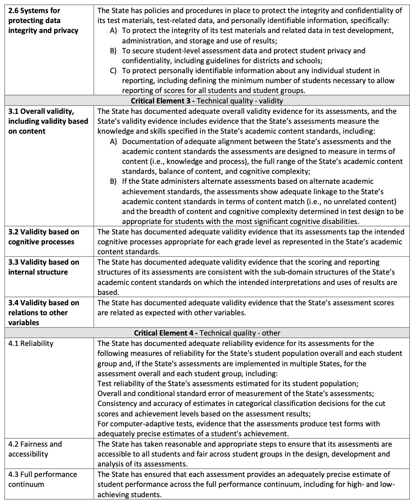
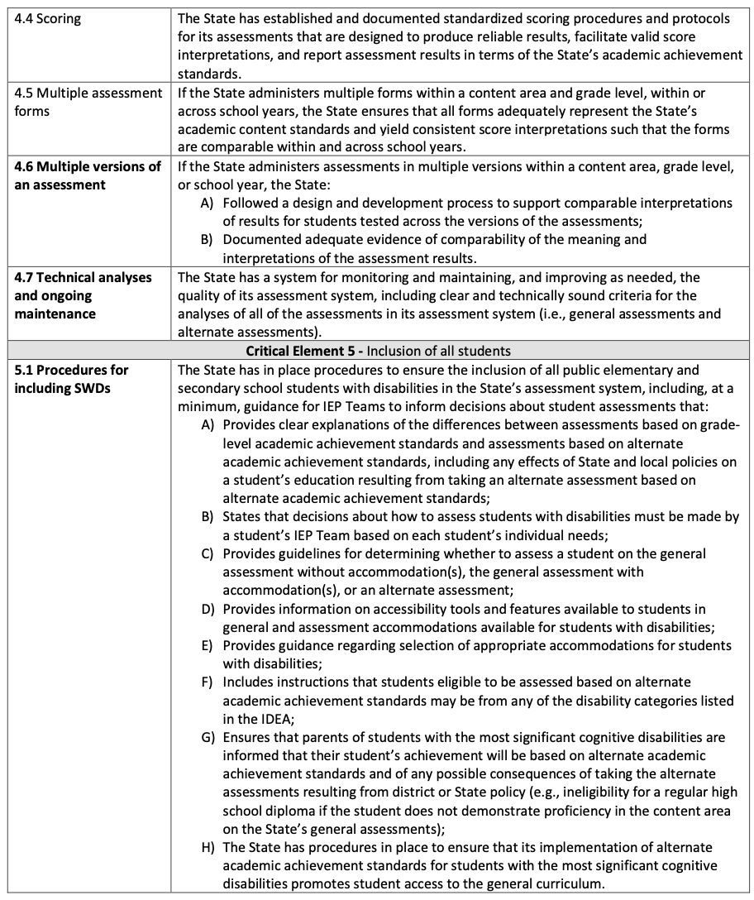
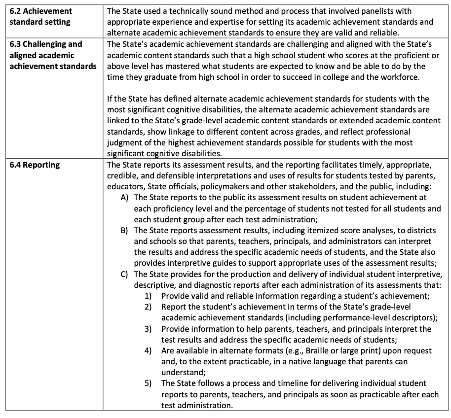
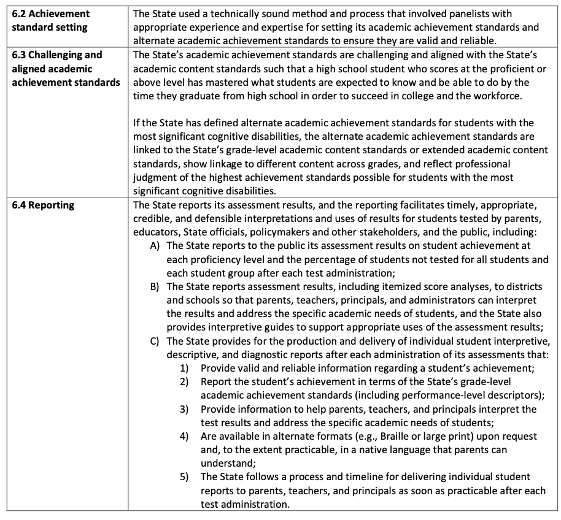

Oregon Extended Assessment Technical Documentation

Introduction
It is the policy of the State Board of Education and a priority of the Oregon Department of Education that there will be no discrimination or harassment on the grounds of race, color, religion, sex, sexual orientation, national origin, age or disability in any educational programs, activities or employment. Persons having questions about equal opportunity and nondiscrimination should contact the Deputy Superintendent of Public Instruction with the Oregon Department of Education.
This technical report is one of a series that describes the development of Oregon’s Statewide Assessment System. The complete set of volumes provides comprehensive documentation of the development, procedures, technical adequacy, and results of the system.

  
   

Overview
This document provides updated technical adequacy documentation for the Oregon Extended Assessment (ORExt), which is Oregon’s alternate assessment based on alternate academic achievement standards (AA-AAAS). The documentation includes test design and development, technical characteristics of the assessments, and their uses, and impact in providing proficiency data on grade level state standards as part of the mandates from the Every Student Succeeds Act of 2015 (ESSA).
The ORExt assessments were redesigned in 2014-15, including a vertical scale in Grades 3-8 in English language arts and mathematics to support eventual determinations of student growth over time. The test is aligned to Essentialized Standards (EsSt) that are part of comprehensive Essentialized Assessment Frameworks (EAFs) that were written at three levels of complexity (low, medium, and high). The EsSt have been linked to grade level content and expectations, but systematically reduced in terms of depth, breadth, and complexity (RDBC). All ORExt items employed in the 2018-19 ORExt administration, with the exception of Grade 7 Math field test items, were developed in 2014-15. Based on student performance from the 2016-2017 testing year, new and Grade 7 Math field test items were written in fall 2017.
A statewide sample of Oregon general and special education teachers have reviewed all test items for: 1) alignment to the EAFs, 2) accessibility for students with significant cognitive disabilities, 3) sensitivity, and 4) bias. All operational items met the established criteria. In addition, Achievement Level Descriptors (ALDs) were also reviewed for alignment to the EsSt. See Sections 1.1, 1.2, 6.1, and 6.3 for additional information related to the comprehensive grade level standards to EsSt linkage, as well as alignment of items to the EsSt.
The ORExt test design supports student access, including access to read aloud for directions and prompts, presentation of one item per page, and items designed at three levels of complexity where the low level complexity items include graphic and/or object support. For assessors, the scoring process has also been simplified, with answers being recorded exactly as given (A,B,or C) and not manually scored by assessors.
Partial credit is no longer part of the scoring metric for the ORExt. In addition, the one item per page format not only increases student ability to focus attention, but also reduces the burden on assessors to mask items that are not being tested. The field appears to have been appreciative of the redesign, particularly the Essentialized Standards and new access and efficiency features.
In addition to developing and reviewing/editing over 5,000 new items, conducting an operational field test, and developing a vertical scale, the development of a new ORExt required that new Alternate Academic Achievement Standards (AAAAS) be developed and approved. Comprehensive Standard Setting meetings were conducted on June 15-17, 2015, which were then approved by the Oregon State Board of Education on June 25, 2015, including new achievement level descriptors (ALDs) and cut scores for the assessments. Comprehensive Annual Measurable Objective (AMO) reports were finalized on July 10, 2015.
Though an alignment study was conducted in the fall of 2014 as described above, Non-Regulatory Guidance from the U.S. Department of Education, published on September 25, 2015, included an expectation that all alignment studies must be independent (see Critical Element 3.1). An independent contractor, Dr. Dianna Carrizales, was therefore hired to perform an additional alignment study in the spring of 2017.
A two year pilot tablet study was conducted in the 2015-2016 and 2016-17 school years. Over the two year study, 26 students were administered all subject areas of the ORExt in tablet format in grades 5, 8, and 11. The 2017-18 school year marked the first year the ORExt was available in tablet/online format for all grades in all subject areas.
As part of our five-year technical documentation plan, which included the independent alignment study, pilot tablet administration study, launch of the full tablet administration, inter-rater reliability study, an analyses of the impact of accommodations was conducted after the 2018-2019 testing window ended.